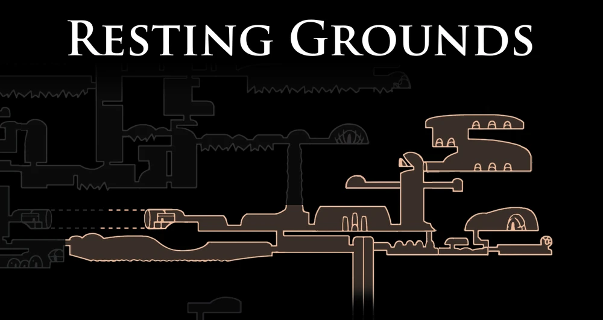

Seer
A última sobrevivente da tribo Moth, que entrega o Ferrão dos Sonhos para coletar Essência.

Cornifer
Mapeando as catacumbas sagradas repletas de túmulos ancestrais.

A última sobrevivente da tribo Moth, que entrega o Ferrão dos Sonhos para coletar Essência.
Mapeando as catacumbas sagradas repletas de túmulos ancestrais.

Um ex-guerreiro de Hallownest cujos túmulos e espadas flutuantes testam os vivos.

Pequenos insetos esqueléticos que vagueiam pelas criptas e cemitérios.